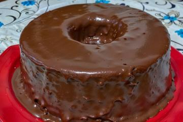

Bolo de Chocolate Fofinho

Ingredientes
Massa
- 3 ovos
- 1 e 1/2 xícara de açúcar
- 2 xícaras de farinha de trigo
- 1 xícara de cacau em pó 70% ou achocolatado
- 1/2 xícara de óleo
- 1 colher de fermento em pó
- 1 pitada de sal
- 1 xícara de água quente
Cobertura
- 4 colheres de leite
- 1/2 xícara de chocolate em pó
- 1 colher de manteiga ou margarina
- 1 xícara de açúcar
Modo de Preparo
Massa
- Pré-aqueça o forno em temperatura média-alta (200°C).
- Em um liquidificador ou batedeira, bata os ovos, açúcar, óleo, achocolatado e a farinha de trigo.
- Despeje a massa em uma tigela e adicionando a água quente e o fermento, misturando muito bem. Caso faça na
batedeira, realize o procedimento na própria batedeira.
- Despeje a massa em uma forma untada e polvilhada, deixando assar por 40 minutos.
- Desenforme ainda quente.
Cobertura
- Em uma panela, leve todos os ingredientes ao fogo até levantar fervura.
- Despeje ainda quente em cima do bolo.
- Dica opcional: leve a geladeira por 1 hora, ou até estar gelado. Sirva em seguida.